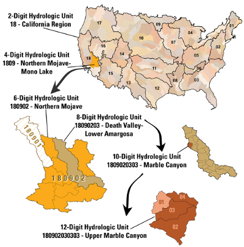

South Platte and Metro Basin Hydrology
This story provides a summary of South Platte and Metro Basin hydrology in order to provide background for understanding water resources issues in the basin.
See the Instructions page for how to view this story.
Created by the Open Water Foundation .
.
Hydrology Concepts - Watersheds
A watershed is an area of land that drains all the streams and rainfall to a common outlet, such as the outflow of a reservoir or any point along a stream channel. A watershed can also be referred to as a drainage basin or catchment; it is also possible to think of a watershed as a precipitation collector. Ridges and hills that separate two watersheds are called the drainage divide. In Colorado, the Continental Divide is an example of a drainage divide at the largest scale. Water that falls west of the Divide will eventually make its way to the Pacific Ocean via rivers like the Colorado River. Water that falls east of the Divide will eventually make its way to the Atlantic Ocean via rivers like the South Platte and Arkansas. Natural drainage features may be modified by human impacts such as dams, tunnels, pumping, canals and other infrastructure.
A watershed consists of surface water--lakes, streams, reservoirs and wetlands--and all the underlying groundwater. Larger watersheds consist of
many smaller watersheds. The size of the watershed depends on the outflow point: all of the land that drains water to the outflow point is the watershed for
that outflow point (USGS Water Science School ). It is helpful to locate streamgages at the outflow point of important water supply watersheds or stream confluences.
). It is helpful to locate streamgages at the outflow point of important water supply watersheds or stream confluences.
There are a number of watershed datasets. A common one is the
Watershed Boundary Dataset (WBD) from the U.S. Geological Survey,
which is a nationwide dataset. Here, watersheds are called hydrologic units and form a standardized system for organizing, collecting, managing
and reporting hydrologic information. Hydrologic units are arranged in a nested, hierarchical system with each unit in the system identified using
a unique code. Hydrologic unit codes (HUC) are developed using a progressive two-digit system where each successively smaller areal unit is
identified by adding two digits to the identifying code of the parent basin. An example of this hierarchy is shown below.

Source: Watershed Boundary Dataset
The WBD contains eight levels of progressive hydrologic units identified by unique 2- to 16-digit codes. The dataset is complete for the United States to the 12-digit hydrologic unit. The map at right shows HUC10 watersheds in the South Platte Basin.
The State of Colorado classifies watersheds into divisions (the South Platte Basin is Division 01) and districts, which correspond to basins associated with water administration. Water-related data in the State's HydroBase database, such as diversion records and water rights, are assigned a "Water District Identifier" or WDID; the first two digits of the WDID are the water district number and the remaining digits indicate a structure such as a diversion headgate or reservoir. On the map at right, click on the second Layers icon in the upper left corner to toggle to a map of the water districts in the Basin. Note that the Republican River and Laramie River basins are sometimes considered with the South Platte Basin but that each has unique water resources issues.
Hydrology Concepts - Streams
Streams are the surface water conveyance features within a watershed. There are a number of stream datasets, including:
- National Hydrography Dataset (NHD) - from the U.S. Geological Survey.
- Source Water Route Framework (SWRF) - developed by the Division of Water Resources and derived from the NHD. The SWRF represents most streams in Colorado, in particular those with water rights or other important features. However, SWRF may not include minor streams or features that do not have a nexus with water administration.
- Colorado Department of Public Health and Environment's
water quality stream segmentation dataset - classifies stream segments based
on level of impairment and the reasons for impairment (E. coli, sediment, temperature, etc.).
Similar to NHD, the SWRF uses a Geographic Names Information System (GNIS) ID, an 8-digit identifier used to uniquely identify most streams in the state, rather than using the stream's common name (there are 13 streams named Dry Creek in the South Platte basin alone). SWRF provides a more simple dataset than NHD: in the SWRF each line represents a stream or river, whereas NHD provides many individual line segments for each stream or river. It is important when using these datasets to indicate the version because government agencies do periodically adjust the data.
By using the NHD linked to the SWRF, it is possible to link federal and State datasets. Datasets such as stream gages, diversion structures and instream flow rights (discussed in subsequent pages in this story) can be "referenced" to the SWRF to provide a common framework for analysis; such data work is ongoing in order to leverage the SWRF dataset.
This map shows a small section of the SWRF, representing the southwest portion of the Basin. The SWRF layer shown here is cropped because showing the full basin would result in a slower visualization. The full SWRF can be downloaded here.
Hydrology Concepts - Streamgages and Measuring Flows
In order to manage the water resources of Colorado it is necessary to measure the surface water flow in natural streams and water distribution
infrastructure. Streamflow, also called discharge, in Colorado is measured by the U.S. Geological Survey (USGS),
Colorado Division of
Water Resources (DWR), local water utilities and other entities that need to know flow amounts for reporting and operations. Sensors and
data loggers (also called data collection units (DCUs) or stage discharge recorders (SDRs)) may record measurements at regular intervals and can be
triggered by changing values such as a rain event. These measurements, often referred to as real-time or instantaneous, may or may not be publicly
available. Real-time data are often publicly reported at 15-minute intervals, representing average conditions over that time. These values are then aggregated to
longer intervals including hour and day. Average values are often suitable for water supply management operations, whereas instantaneous values
may be used to monitor peak flows, environmental flows or other critical conditions.
It is important to recognize that a daily average flow, such as reported by USGS or DWR, does not mean that the flow was the same from midnight to midnight; in actuality, the flow could have varied significantly during the day and using shorter-interval data is necessary to understand the variation.
Each organization that collects data assigns a station identifier and name to the station. Multiple data sources, identifier conventions and data formats can present challenges to finding and using data.
This map shows active streamgages operated by DWR, USGS or other entities such as a municipal utility. Click on a circle for more information,
including links to the website for each gage, which shows current flow conditions measured by the gage. (Source:
CDSS Map Viewer, Surface Water Current Conditions layer, "Active Gage - Stream" option.)
Measuring streamflow in natural channels to a reasonable level of accuracy can be challenging. See the USGS information about how streamflow is measured. It is
particularly challenging to measure flow in channels that change over time, such as the South Platte River in wide, sandy locations.